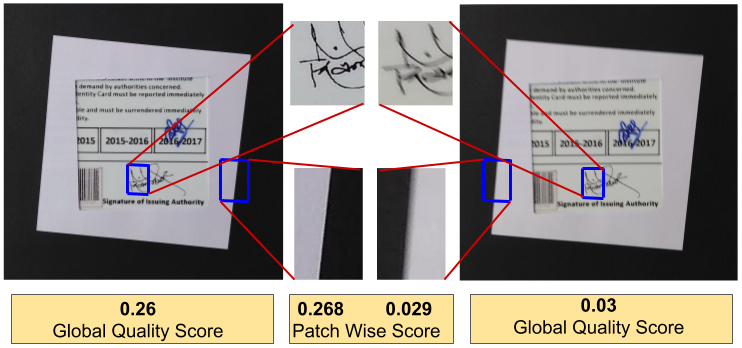
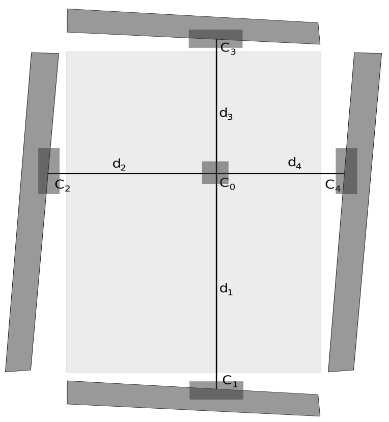
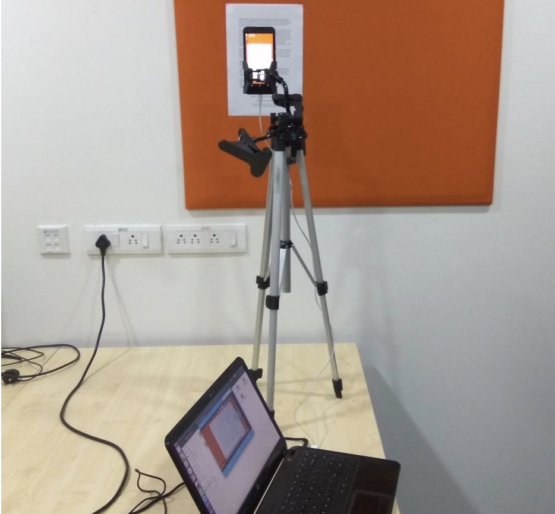
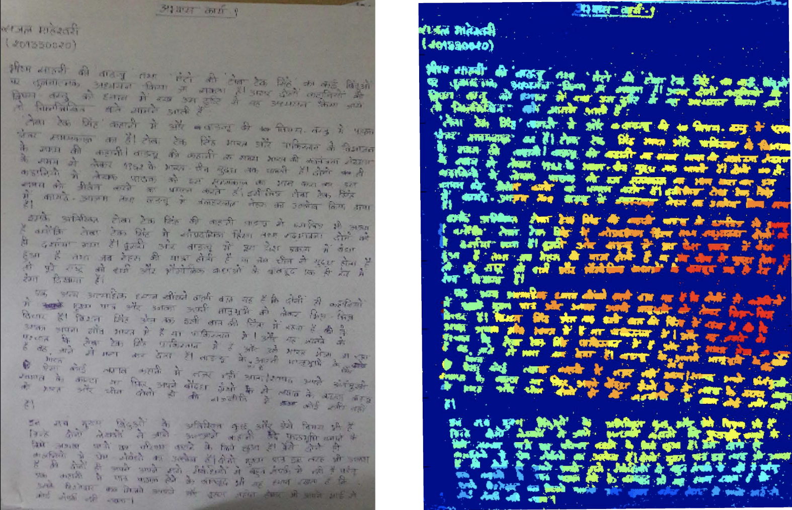

|
Sajal Maheshwari
I am a machine learning engineer at Qualcomm, where I work with the autonomous driving team.
At Qualcomm I am currently working in the Sensor fusion team, trying to generate a robust autonomous driving system using multiple sensors and a combination of classical and deep learning based methods. Previously, I have worked with the Camera team in Qualcomm India, and developed algorithms for better dynamic range and exposure. I graduated from Carnegie Mellon University, with a Masters degree in computer vision in December 2020 where I worked with Michael Kaess on Semantic Map Representation for indoor visual SLAM. Before that, I completed my B.Tech. with Honours from International Institute of Information Technology, Hyderabad, in 2017, where I worked with Vineet Gandhi on document image quality analysis.
Email /
CV /
Bio /
Google Scholar /
Github
|
|
|
Research
I'm interested in computer vision, machine learning, optimization, and image processing. I have worked in visual SLAM, document analytics and Computational Photography. Some of my published works are mentioned below
|
|

|
TextureToMTF: Predicting spatial frequency response in the wild
Murtuza Bohra, Sajal Maheshwari, Vineet Gandhi
Signal, Image and Video Processing , 2020
project page /
bibtex /
code
We try to predict the quality of an image by using the spatial frequency response function of the camera.
|
|

|
Document quality estimation using spatial frequency response
Pranjal Kumar Rai, Sajal Maheshwari, Vineet Gandhi
ICASSP(Oral), 2018
bibtex
We try to predict the quality of an image by proposing a new method of ground truth generation in planar document images using spatial frequency response to generate local patch-based ground truths.
|
|

|
Beyond OCRs for Document Blur Estimation
Pranjal Kumar Rai* , Sajal Maheshwari,*,Ishit Mehta , Parikshit Sakurikar, Vineet Gandhi
ICDAR, 2017
bibtex
We estimate the amount of out-of-focus blur in a document image by creating a focal stack of images and assessing the quality of an image by the difference in the image and focus distance.
|
|

|
Document Blur Detection using Edge Profile Mining
Sajal Maheshwari, Pranjal Kumar Rai ,Gopal Sharma , Vineet Gandhi
ICVGIP, 2016
bibtex /
code
We estimate the amount of out-of-focus blur in a document image by extracting the important regions of an image by proposing a novel operator and determine the blur through statistical properties of the extracted regions.
|
|
Awards and Services
Dean's Academic List and Dean's Research List, IIIT-H
Reviewer for ICVGIP 2018 and ICRA 2022
|
|
{kind=link}